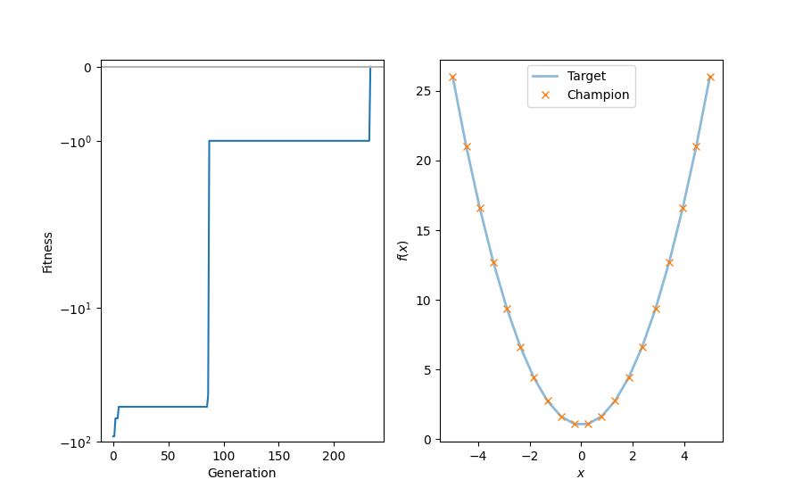

<!DOCTYPE html>
<html class="writer-html5" lang="en" >
<head>
  <meta charset="utf-8" />
  
  <meta name="viewport" content="width=device-width, initial-scale=1.0" />
  
  <title>Minimal example for evolutionary regression &mdash; hal-cgp 0.2.0 documentation</title>
  

  
  <link rel="stylesheet" href="../_static/css/msmb.css" type="text/css" />
  <link rel="stylesheet" href="../_static/pygments.css" type="text/css" />
  <link rel="stylesheet" href="../_static/gallery.css" type="text/css" />
  <link rel="stylesheet" href="../_static/gallery-binder.css" type="text/css" />
  <link rel="stylesheet" href="../_static/gallery-dataframe.css" type="text/css" />
  <link rel="stylesheet" href="../_static/gallery-rendered-html.css" type="text/css" />

  
  

  
  

  

  
  <!--[if lt IE 9]>
    <script src="../_static/js/html5shiv.min.js"></script>
  <![endif]-->
  
    
      <script type="text/javascript" id="documentation_options" data-url_root="../" src="../_static/documentation_options.js"></script>
        <script src="../_static/jquery.js"></script>
        <script src="../_static/underscore.js"></script>
        <script src="../_static/doctools.js"></script>
        <script src="../_static/language_data.js"></script>
        <script src="../_static/js/versions.js"></script>
    
    <script type="text/javascript" src="../_static/js/theme.js"></script>

    
    <link rel="index" title="Index" href="../genindex.html" />
    <link rel="search" title="Search" href="../search.html" />
    <link rel="next" title="Example for evolutionary regression with multiple genomes" href="example_multi_genome.html" />
    <link rel="prev" title="Example demonstrating the use of the caching decorator with functional equivalance checking" href="example_fec_caching.html" /> 
</head>

<body class="wy-body-for-nav">

   
  <div class="wy-grid-for-nav">
    
    <nav data-toggle="wy-nav-shift" class="wy-nav-side">
      <div class="wy-side-scroll">
        <div class="wy-side-nav-search" >
          

          
            <a href="../index.html" class="icon icon-home"> hal-cgp
          

          
          </a>

          
            
            
          

          
<div role="search">
  <form id="rtd-search-form" class="wy-form" action="../search.html" method="get">
    <input type="text" name="q" placeholder="Search docs" />
    <input type="hidden" name="check_keywords" value="yes" />
    <input type="hidden" name="area" value="default" />
  </form>
</div>

          
        </div>

        
        <div class="wy-menu wy-menu-vertical" data-spy="affix" role="navigation" aria-label="main navigation">
          
            
            
              
            
            
              <ul class="current">
<li class="toctree-l1"><a class="reference internal" href="../installation.html">Installation</a></li>
<li class="toctree-l1"><a class="reference internal" href="../basic_usage.html">Basic usage</a></li>
<li class="toctree-l1"><a class="reference internal" href="../documentation/documentation.html">Documentation</a></li>
<li class="toctree-l1 current"><a class="reference internal" href="index.html">Examples</a><ul class="current">
<li class="toctree-l2"><a class="reference internal" href="example_caching.html">Example demonstrating the use of the caching decorator.</a></li>
<li class="toctree-l2"><a class="reference internal" href="example_fec_caching.html">Example demonstrating the use of the caching decorator with functional equivalance checking</a></li>
<li class="toctree-l2 current"><a class="current reference internal" href="#">Minimal example for evolutionary regression</a></li>
<li class="toctree-l2"><a class="reference internal" href="example_multi_genome.html">Example for evolutionary regression with multiple genomes</a></li>
<li class="toctree-l2"><a class="reference internal" href="example_reorder.html">Example for evolutionary regression with genome reordering</a></li>
<li class="toctree-l2"><a class="reference internal" href="example_hurdles.html">Minimal example for evolutionary regression using hurdles</a></li>
<li class="toctree-l2"><a class="reference internal" href="example_piecewise_target_function.html">Example for evolutionary regression on a piecewise target function</a></li>
<li class="toctree-l2"><a class="reference internal" href="example_parametrized_nodes.html">Example for evolutionary regression with parametrized nodes</a></li>
<li class="toctree-l2"><a class="reference internal" href="example_differential_evo_regression.html">Example for differential evolutionary regression</a></li>
<li class="toctree-l2"><a class="reference internal" href="example_local_search_evolution_strategies.html">Example for evolutionary regression with local search via evolution strategies</a></li>
<li class="toctree-l2"><a class="reference internal" href="example_evo_regression.html">Example for evolutionary regression</a></li>
<li class="toctree-l2"><a class="reference internal" href="example_mountain_car.html">Example: Solving an OpenAI Gym environment with CGP.</a></li>
</ul>
</li>
<li class="toctree-l1"><a class="reference internal" href="../api_reference/api_reference.html">API reference</a></li>
<li class="toctree-l1"><a class="reference internal" href="../references.html">References</a></li>
<li class="toctree-l1"><a class="reference internal" href="../citation.html">Citation</a></li>
</ul>

            
          
        </div>
        
      </div>
    </nav>

    <section data-toggle="wy-nav-shift" class="wy-nav-content-wrap">

      
      <nav class="wy-nav-top" aria-label="top navigation">
        
          <i data-toggle="wy-nav-top" class="fa fa-bars"></i>
          <a href="../index.html">hal-cgp</a>
        
      </nav>


      <div class="wy-nav-content">
        
        <div class="rst-content">
        
          


<div role="navigation" aria-label="breadcrumbs navigation">

  <ul class="wy-breadcrumbs">
    
      <li><a href="../index.html" class="icon icon-home"></a> &raquo;</li>
        
          <li><a href="index.html">Examples</a> &raquo;</li>
        
      <li>Minimal example for evolutionary regression</li>
    
    
      <li class="wy-breadcrumbs-aside">
        
          
            <a href="../_sources/auto_examples/example_minimal.rst.txt" rel="nofollow"> View page source</a>
          
        
      </li>
    
  </ul>

  
  <hr/>
</div>
          <div role="main" class="document" itemscope="itemscope" itemtype="http://schema.org/Article">
           <div itemprop="articleBody">
            
  <div class="sphx-glr-download-link-note admonition note">
<p class="admonition-title">Note</p>
<p>Click <a class="reference internal" href="#sphx-glr-download-auto-examples-example-minimal-py"><span class="std std-ref">here</span></a>
to download the full example code</p>
</div>
<div class="sphx-glr-example-title section" id="minimal-example-for-evolutionary-regression">
<span id="sphx-glr-auto-examples-example-minimal-py"></span><h1>Minimal example for evolutionary regression<a class="headerlink" href="#minimal-example-for-evolutionary-regression" title="Permalink to this headline">¶</a></h1>
<p>Example demonstrating the use of Cartesian genetic programming for
a simple regression task.</p>
<div class="highlight-default notranslate"><div class="highlight"><pre><span></span><span class="c1"># The docopt str is added explicitly to ensure compatibility with</span>
<span class="c1"># sphinx-gallery.</span>
<span class="n">docopt_str</span> <span class="o">=</span> <span class="s2">&quot;&quot;&quot;</span>
<span class="s2">   Usage:</span>
<span class="s2">     example_minimal.py [--max-generations=&lt;N&gt;]</span>

<span class="s2">   Options:</span>
<span class="s2">     -h --help</span>
<span class="s2">     --max-generations=&lt;N&gt;  Maximum number of generations [default: 300]</span>
<span class="s2">&quot;&quot;&quot;</span>

<span class="kn">import</span> <span class="nn">matplotlib.pyplot</span> <span class="k">as</span> <span class="nn">plt</span>
<span class="kn">import</span> <span class="nn">numpy</span> <span class="k">as</span> <span class="nn">np</span>
<span class="kn">import</span> <span class="nn">scipy.constants</span>
<span class="kn">from</span> <span class="nn">docopt</span> <span class="kn">import</span> <span class="n">docopt</span>

<span class="kn">import</span> <span class="nn">cgp</span>

<span class="n">args</span> <span class="o">=</span> <span class="n">docopt</span><span class="p">(</span><span class="n">docopt_str</span><span class="p">)</span>
</pre></div>
</div>
<p>We first define a target function.</p>
<div class="highlight-default notranslate"><div class="highlight"><pre><span></span><span class="k">def</span> <span class="nf">f_target</span><span class="p">(</span><span class="n">x</span><span class="p">):</span>
    <span class="k">return</span> <span class="n">x</span><span class="p">[</span><span class="mi">0</span><span class="p">]</span> <span class="o">**</span> <span class="mi">2</span> <span class="o">+</span> <span class="mf">1.0</span>
</pre></div>
</div>
<p>Then we define the objective function for the evolution. It uses
the mean-squared error between the output of the expression
represented by a given individual and the target function evaluated
on a set of random points.</p>
<div class="highlight-default notranslate"><div class="highlight"><pre><span></span><span class="k">def</span> <span class="nf">objective</span><span class="p">(</span><span class="n">individual</span><span class="p">):</span>

    <span class="k">if</span> <span class="ow">not</span> <span class="n">individual</span><span class="o">.</span><span class="n">fitness_is_None</span><span class="p">():</span>
        <span class="k">return</span> <span class="n">individual</span>

    <span class="n">n_function_evaluations</span> <span class="o">=</span> <span class="mi">1000</span>

    <span class="n">np</span><span class="o">.</span><span class="n">random</span><span class="o">.</span><span class="n">seed</span><span class="p">(</span><span class="mi">1234</span><span class="p">)</span>

    <span class="n">f</span> <span class="o">=</span> <span class="n">individual</span><span class="o">.</span><span class="n">to_func</span><span class="p">()</span>
    <span class="n">loss</span> <span class="o">=</span> <span class="mi">0</span>
    <span class="k">for</span> <span class="n">x</span> <span class="ow">in</span> <span class="n">np</span><span class="o">.</span><span class="n">random</span><span class="o">.</span><span class="n">uniform</span><span class="p">(</span><span class="o">-</span><span class="mi">4</span><span class="p">,</span> <span class="mi">4</span><span class="p">,</span> <span class="n">n_function_evaluations</span><span class="p">):</span>
        <span class="c1"># the callable returned from `to_func` accepts and returns</span>
        <span class="c1"># lists; accordingly we need to pack the argument and unpack</span>
        <span class="c1"># the return value</span>
        <span class="n">y</span> <span class="o">=</span> <span class="n">f</span><span class="p">([</span><span class="n">x</span><span class="p">])[</span><span class="mi">0</span><span class="p">]</span>
        <span class="n">loss</span> <span class="o">+=</span> <span class="p">(</span><span class="n">f_target</span><span class="p">([</span><span class="n">x</span><span class="p">])</span> <span class="o">-</span> <span class="n">y</span><span class="p">)</span> <span class="o">**</span> <span class="mi">2</span>

    <span class="n">individual</span><span class="o">.</span><span class="n">fitness</span> <span class="o">=</span> <span class="o">-</span><span class="n">loss</span> <span class="o">/</span> <span class="n">n_function_evaluations</span>

    <span class="k">return</span> <span class="n">individual</span>
</pre></div>
</div>
<p>Next, we set up the evolutionary search. We first define the
parameters for the population, the genome of individuals, and the
evolutionary algorithm.</p>
<div class="highlight-default notranslate"><div class="highlight"><pre><span></span><span class="n">population_params</span> <span class="o">=</span> <span class="p">{</span><span class="s2">&quot;n_parents&quot;</span><span class="p">:</span> <span class="mi">1</span><span class="p">,</span> <span class="s2">&quot;seed&quot;</span><span class="p">:</span> <span class="mi">8188211</span><span class="p">}</span>

<span class="n">genome_params</span> <span class="o">=</span> <span class="p">{</span>
    <span class="s2">&quot;n_inputs&quot;</span><span class="p">:</span> <span class="mi">1</span><span class="p">,</span>
    <span class="s2">&quot;n_outputs&quot;</span><span class="p">:</span> <span class="mi">1</span><span class="p">,</span>
    <span class="s2">&quot;n_columns&quot;</span><span class="p">:</span> <span class="mi">12</span><span class="p">,</span>
    <span class="s2">&quot;n_rows&quot;</span><span class="p">:</span> <span class="mi">1</span><span class="p">,</span>
    <span class="s2">&quot;levels_back&quot;</span><span class="p">:</span> <span class="mi">5</span><span class="p">,</span>
    <span class="s2">&quot;primitives&quot;</span><span class="p">:</span> <span class="p">(</span><span class="n">cgp</span><span class="o">.</span><span class="n">Add</span><span class="p">,</span> <span class="n">cgp</span><span class="o">.</span><span class="n">Sub</span><span class="p">,</span> <span class="n">cgp</span><span class="o">.</span><span class="n">Mul</span><span class="p">,</span> <span class="n">cgp</span><span class="o">.</span><span class="n">ConstantFloat</span><span class="p">),</span>
<span class="p">}</span>

<span class="n">ea_params</span> <span class="o">=</span> <span class="p">{</span><span class="s2">&quot;n_offsprings&quot;</span><span class="p">:</span> <span class="mi">4</span><span class="p">,</span> <span class="s2">&quot;mutation_rate&quot;</span><span class="p">:</span> <span class="mf">0.03</span><span class="p">,</span> <span class="s2">&quot;n_processes&quot;</span><span class="p">:</span> <span class="mi">2</span><span class="p">}</span>

<span class="n">evolve_params</span> <span class="o">=</span> <span class="p">{</span><span class="s2">&quot;max_generations&quot;</span><span class="p">:</span> <span class="nb">int</span><span class="p">(</span><span class="n">args</span><span class="p">[</span><span class="s2">&quot;--max-generations&quot;</span><span class="p">]),</span> <span class="s2">&quot;termination_fitness&quot;</span><span class="p">:</span> <span class="mf">0.0</span><span class="p">}</span>
</pre></div>
</div>
<p>We create a population that will be evolved</p>
<div class="highlight-default notranslate"><div class="highlight"><pre><span></span><span class="n">pop</span> <span class="o">=</span> <span class="n">cgp</span><span class="o">.</span><span class="n">Population</span><span class="p">(</span><span class="o">**</span><span class="n">population_params</span><span class="p">,</span> <span class="n">genome_params</span><span class="o">=</span><span class="n">genome_params</span><span class="p">)</span>
</pre></div>
</div>
<p>and an instance of the (mu + lambda) evolutionary algorithm</p>
<div class="highlight-default notranslate"><div class="highlight"><pre><span></span><span class="n">ea</span> <span class="o">=</span> <span class="n">cgp</span><span class="o">.</span><span class="n">ea</span><span class="o">.</span><span class="n">MuPlusLambda</span><span class="p">(</span><span class="o">**</span><span class="n">ea_params</span><span class="p">)</span>
</pre></div>
</div>
<p>We define a callback for recording of fitness over generations</p>
<div class="highlight-default notranslate"><div class="highlight"><pre><span></span><span class="n">history</span> <span class="o">=</span> <span class="p">{}</span>
<span class="n">history</span><span class="p">[</span><span class="s2">&quot;fitness_champion&quot;</span><span class="p">]</span> <span class="o">=</span> <span class="p">[]</span>


<span class="k">def</span> <span class="nf">recording_callback</span><span class="p">(</span><span class="n">pop</span><span class="p">):</span>
    <span class="n">history</span><span class="p">[</span><span class="s2">&quot;fitness_champion&quot;</span><span class="p">]</span><span class="o">.</span><span class="n">append</span><span class="p">(</span><span class="n">pop</span><span class="o">.</span><span class="n">champion</span><span class="o">.</span><span class="n">fitness</span><span class="p">)</span>
</pre></div>
</div>
<p>and finally perform the evolution</p>
<div class="highlight-default notranslate"><div class="highlight"><pre><span></span><span class="n">cgp</span><span class="o">.</span><span class="n">evolve</span><span class="p">(</span><span class="n">pop</span><span class="p">,</span> <span class="n">objective</span><span class="p">,</span> <span class="n">ea</span><span class="p">,</span> <span class="o">**</span><span class="n">evolve_params</span><span class="p">,</span> <span class="n">print_progress</span><span class="o">=</span><span class="kc">True</span><span class="p">,</span> <span class="n">callback</span><span class="o">=</span><span class="n">recording_callback</span><span class="p">)</span>
</pre></div>
</div>
<p class="sphx-glr-script-out">Out:</p>
<div class="sphx-glr-script-out highlight-none notranslate"><div class="highlight"><pre><span></span>[2/300] max fitness: -91.5955167981362
[3/300] max fitness: -67.0965931324104
[4/300] max fitness: -67.0965931324104
[5/300] max fitness: -67.0965931324104
[6/300] max fitness: -54.97072455431481
[7/300] max fitness: -54.97072455431481
[8/300] max fitness: -54.97072455431481
[9/300] max fitness: -54.97072455431481
[10/300] max fitness: -54.97072455431481
[11/300] max fitness: -54.97072455431481
[12/300] max fitness: -54.97072455431481
[13/300] max fitness: -54.97072455431481
[14/300] max fitness: -54.97072455431481
[15/300] max fitness: -54.97072455431481
[16/300] max fitness: -54.97072455431481
[17/300] max fitness: -54.97072455431481
[18/300] max fitness: -54.97072455431481
[19/300] max fitness: -54.97072455431481
[20/300] max fitness: -54.97072455431481
[21/300] max fitness: -54.97072455431481
[22/300] max fitness: -54.97072455431481
[23/300] max fitness: -54.97072455431481
[24/300] max fitness: -54.97072455431481
[25/300] max fitness: -54.97072455431481
[26/300] max fitness: -54.97072455431481
[27/300] max fitness: -54.97072455431481
[28/300] max fitness: -54.97072455431481
[29/300] max fitness: -54.97072455431481
[30/300] max fitness: -54.97072455431481
[31/300] max fitness: -54.97072455431481
[32/300] max fitness: -54.97072455431481
[33/300] max fitness: -54.97072455431481
[34/300] max fitness: -54.97072455431481
[35/300] max fitness: -54.97072455431481
[36/300] max fitness: -54.97072455431481
[37/300] max fitness: -54.97072455431481
[38/300] max fitness: -54.97072455431481
[39/300] max fitness: -54.97072455431481
[40/300] max fitness: -54.97072455431481
[41/300] max fitness: -54.97072455431481
[42/300] max fitness: -54.97072455431481
[43/300] max fitness: -54.97072455431481
[44/300] max fitness: -54.97072455431481
[45/300] max fitness: -54.97072455431481
[46/300] max fitness: -54.97072455431481
[47/300] max fitness: -54.97072455431481
[48/300] max fitness: -54.97072455431481
[49/300] max fitness: -54.97072455431481
[50/300] max fitness: -54.97072455431481
[51/300] max fitness: -54.97072455431481
[52/300] max fitness: -54.97072455431481
[53/300] max fitness: -54.97072455431481
[54/300] max fitness: -54.97072455431481
[55/300] max fitness: -54.97072455431481
[56/300] max fitness: -54.97072455431481
[57/300] max fitness: -54.97072455431481
[58/300] max fitness: -54.97072455431481
[59/300] max fitness: -54.97072455431481
[60/300] max fitness: -54.97072455431481
[61/300] max fitness: -54.97072455431481
[62/300] max fitness: -54.97072455431481
[63/300] max fitness: -54.97072455431481
[64/300] max fitness: -54.97072455431481
[65/300] max fitness: -54.97072455431481
[66/300] max fitness: -54.97072455431481
[67/300] max fitness: -54.97072455431481
[68/300] max fitness: -54.97072455431481
[69/300] max fitness: -54.97072455431481
[70/300] max fitness: -54.97072455431481
[71/300] max fitness: -54.97072455431481
[72/300] max fitness: -54.97072455431481
[73/300] max fitness: -54.97072455431481
[74/300] max fitness: -54.97072455431481
[75/300] max fitness: -54.97072455431481
[76/300] max fitness: -54.97072455431481
[77/300] max fitness: -54.97072455431481
[78/300] max fitness: -54.97072455431481
[79/300] max fitness: -54.97072455431481
[80/300] max fitness: -54.97072455431481
[81/300] max fitness: -54.97072455431481
[82/300] max fitness: -54.97072455431481
[83/300] max fitness: -54.97072455431481
[84/300] max fitness: -54.97072455431481
[85/300] max fitness: -54.97072455431481
[86/300] max fitness: -54.97072455431481
[87/300] max fitness: -44.844855976219186
[88/300] max fitness: -1.0
[89/300] max fitness: -1.0
[90/300] max fitness: -1.0
[91/300] max fitness: -1.0
[92/300] max fitness: -1.0
[93/300] max fitness: -1.0
[94/300] max fitness: -1.0
[95/300] max fitness: -1.0
[96/300] max fitness: -1.0
[97/300] max fitness: -1.0
[98/300] max fitness: -1.0
[99/300] max fitness: -1.0
[100/300] max fitness: -1.0
[101/300] max fitness: -1.0
[102/300] max fitness: -1.0
[103/300] max fitness: -1.0
[104/300] max fitness: -1.0
[105/300] max fitness: -1.0
[106/300] max fitness: -1.0
[107/300] max fitness: -1.0
[108/300] max fitness: -1.0
[109/300] max fitness: -1.0
[110/300] max fitness: -1.0
[111/300] max fitness: -1.0
[112/300] max fitness: -1.0
[113/300] max fitness: -1.0
[114/300] max fitness: -1.0
[115/300] max fitness: -1.0
[116/300] max fitness: -1.0
[117/300] max fitness: -1.0
[118/300] max fitness: -1.0
[119/300] max fitness: -1.0
[120/300] max fitness: -1.0
[121/300] max fitness: -1.0
[122/300] max fitness: -1.0
[123/300] max fitness: -1.0
[124/300] max fitness: -1.0
[125/300] max fitness: -1.0
[126/300] max fitness: -1.0
[127/300] max fitness: -1.0
[128/300] max fitness: -1.0
[129/300] max fitness: -1.0
[130/300] max fitness: -1.0
[131/300] max fitness: -1.0
[132/300] max fitness: -1.0
[133/300] max fitness: -1.0
[134/300] max fitness: -1.0
[135/300] max fitness: -1.0
[136/300] max fitness: -1.0
[137/300] max fitness: -1.0
[138/300] max fitness: -1.0
[139/300] max fitness: -1.0
[140/300] max fitness: -1.0
[141/300] max fitness: -1.0
[142/300] max fitness: -1.0
[143/300] max fitness: -1.0
[144/300] max fitness: -1.0
[145/300] max fitness: -1.0
[146/300] max fitness: -1.0
[147/300] max fitness: -1.0
[148/300] max fitness: -1.0
[149/300] max fitness: -1.0
[150/300] max fitness: -1.0
[151/300] max fitness: -1.0
[152/300] max fitness: -1.0
[153/300] max fitness: -1.0
[154/300] max fitness: -1.0
[155/300] max fitness: -1.0
[156/300] max fitness: -1.0
[157/300] max fitness: -1.0
[158/300] max fitness: -1.0
[159/300] max fitness: -1.0
[160/300] max fitness: -1.0
[161/300] max fitness: -1.0
[162/300] max fitness: -1.0
[163/300] max fitness: -1.0
[164/300] max fitness: -1.0
[165/300] max fitness: -1.0
[166/300] max fitness: -1.0
[167/300] max fitness: -1.0
[168/300] max fitness: -1.0
[169/300] max fitness: -1.0
[170/300] max fitness: -1.0
[171/300] max fitness: -1.0
[172/300] max fitness: -1.0
[173/300] max fitness: -1.0
[174/300] max fitness: -1.0
[175/300] max fitness: -1.0
[176/300] max fitness: -1.0
[177/300] max fitness: -1.0
[178/300] max fitness: -1.0
[179/300] max fitness: -1.0
[180/300] max fitness: -1.0
[181/300] max fitness: -1.0
[182/300] max fitness: -1.0
[183/300] max fitness: -1.0
[184/300] max fitness: -1.0
[185/300] max fitness: -1.0
[186/300] max fitness: -1.0
[187/300] max fitness: -1.0
[188/300] max fitness: -1.0
[189/300] max fitness: -1.0
[190/300] max fitness: -1.0
[191/300] max fitness: -1.0
[192/300] max fitness: -1.0
[193/300] max fitness: -1.0
[194/300] max fitness: -1.0
[195/300] max fitness: -1.0
[196/300] max fitness: -1.0
[197/300] max fitness: -1.0
[198/300] max fitness: -1.0
[199/300] max fitness: -1.0
[200/300] max fitness: -1.0
[201/300] max fitness: -1.0
[202/300] max fitness: -1.0
[203/300] max fitness: -1.0
[204/300] max fitness: -1.0
[205/300] max fitness: -1.0
[206/300] max fitness: -1.0
[207/300] max fitness: -1.0
[208/300] max fitness: -1.0
[209/300] max fitness: -1.0
[210/300] max fitness: -1.0
[211/300] max fitness: -1.0
[212/300] max fitness: -1.0
[213/300] max fitness: -1.0
[214/300] max fitness: -1.0
[215/300] max fitness: -1.0
[216/300] max fitness: -1.0
[217/300] max fitness: -1.0
[218/300] max fitness: -1.0
[219/300] max fitness: -1.0
[220/300] max fitness: -1.0
[221/300] max fitness: -1.0
[222/300] max fitness: -1.0
[223/300] max fitness: -1.0
[224/300] max fitness: -1.0
[225/300] max fitness: -1.0
[226/300] max fitness: -1.0
[227/300] max fitness: -1.0
[228/300] max fitness: -1.0
[229/300] max fitness: -1.0
[230/300] max fitness: -1.0
[231/300] max fitness: -1.0
[232/300] max fitness: -1.0
[233/300] max fitness: -1.0
[234/300] max fitness: 0.0
</pre></div>
</div>
<p>After finishing the evolution, we plot the result and log the final
evolved expression.</p>
<div class="highlight-default notranslate"><div class="highlight"><pre><span></span><span class="n">width</span> <span class="o">=</span> <span class="mf">9.0</span>
<span class="n">fig</span><span class="p">,</span> <span class="n">axes</span> <span class="o">=</span> <span class="n">plt</span><span class="o">.</span><span class="n">subplots</span><span class="p">(</span><span class="mi">1</span><span class="p">,</span> <span class="mi">2</span><span class="p">,</span> <span class="n">figsize</span><span class="o">=</span><span class="p">(</span><span class="n">width</span><span class="p">,</span> <span class="n">width</span> <span class="o">/</span> <span class="n">scipy</span><span class="o">.</span><span class="n">constants</span><span class="o">.</span><span class="n">golden</span><span class="p">))</span>

<span class="n">ax_fitness</span><span class="p">,</span> <span class="n">ax_function</span> <span class="o">=</span> <span class="n">axes</span><span class="p">[</span><span class="mi">0</span><span class="p">],</span> <span class="n">axes</span><span class="p">[</span><span class="mi">1</span><span class="p">]</span>
<span class="n">ax_fitness</span><span class="o">.</span><span class="n">set_xlabel</span><span class="p">(</span><span class="s2">&quot;Generation&quot;</span><span class="p">)</span>
<span class="n">ax_fitness</span><span class="o">.</span><span class="n">set_ylabel</span><span class="p">(</span><span class="s2">&quot;Fitness&quot;</span><span class="p">)</span>

<span class="n">ax_fitness</span><span class="o">.</span><span class="n">plot</span><span class="p">(</span><span class="n">history</span><span class="p">[</span><span class="s2">&quot;fitness_champion&quot;</span><span class="p">],</span> <span class="n">label</span><span class="o">=</span><span class="s2">&quot;Champion&quot;</span><span class="p">)</span>

<span class="n">ax_fitness</span><span class="o">.</span><span class="n">set_yscale</span><span class="p">(</span><span class="s2">&quot;symlog&quot;</span><span class="p">)</span>
<span class="n">ax_fitness</span><span class="o">.</span><span class="n">set_ylim</span><span class="p">(</span><span class="o">-</span><span class="mf">1.0e2</span><span class="p">,</span> <span class="mf">0.1</span><span class="p">)</span>
<span class="n">ax_fitness</span><span class="o">.</span><span class="n">axhline</span><span class="p">(</span><span class="mf">0.0</span><span class="p">,</span> <span class="n">color</span><span class="o">=</span><span class="s2">&quot;0.7&quot;</span><span class="p">)</span>

<span class="n">f</span> <span class="o">=</span> <span class="n">pop</span><span class="o">.</span><span class="n">champion</span><span class="o">.</span><span class="n">to_func</span><span class="p">()</span>
<span class="n">x</span> <span class="o">=</span> <span class="n">np</span><span class="o">.</span><span class="n">linspace</span><span class="p">(</span><span class="o">-</span><span class="mf">5.0</span><span class="p">,</span> <span class="mf">5.0</span><span class="p">,</span> <span class="mi">20</span><span class="p">)</span>
<span class="n">y</span> <span class="o">=</span> <span class="p">[</span><span class="n">f</span><span class="p">([</span><span class="n">x_i</span><span class="p">])</span> <span class="k">for</span> <span class="n">x_i</span> <span class="ow">in</span> <span class="n">x</span><span class="p">]</span>
<span class="n">y_target</span> <span class="o">=</span> <span class="p">[</span><span class="n">f_target</span><span class="p">([</span><span class="n">x_i</span><span class="p">])</span> <span class="k">for</span> <span class="n">x_i</span> <span class="ow">in</span> <span class="n">x</span><span class="p">]</span>

<span class="n">ax_function</span><span class="o">.</span><span class="n">plot</span><span class="p">(</span><span class="n">x</span><span class="p">,</span> <span class="n">y_target</span><span class="p">,</span> <span class="n">lw</span><span class="o">=</span><span class="mi">2</span><span class="p">,</span> <span class="n">alpha</span><span class="o">=</span><span class="mf">0.5</span><span class="p">,</span> <span class="n">label</span><span class="o">=</span><span class="s2">&quot;Target&quot;</span><span class="p">)</span>
<span class="n">ax_function</span><span class="o">.</span><span class="n">plot</span><span class="p">(</span><span class="n">x</span><span class="p">,</span> <span class="n">y</span><span class="p">,</span> <span class="s2">&quot;x&quot;</span><span class="p">,</span> <span class="n">label</span><span class="o">=</span><span class="s2">&quot;Champion&quot;</span><span class="p">)</span>
<span class="n">ax_function</span><span class="o">.</span><span class="n">legend</span><span class="p">()</span>
<span class="n">ax_function</span><span class="o">.</span><span class="n">set_ylabel</span><span class="p">(</span><span class="sa">r</span><span class="s2">&quot;$f(x)$&quot;</span><span class="p">)</span>
<span class="n">ax_function</span><span class="o">.</span><span class="n">set_xlabel</span><span class="p">(</span><span class="sa">r</span><span class="s2">&quot;$x$&quot;</span><span class="p">)</span>

<span class="n">fig</span><span class="o">.</span><span class="n">savefig</span><span class="p">(</span><span class="s2">&quot;example_minimal.pdf&quot;</span><span class="p">,</span> <span class="n">dpi</span><span class="o">=</span><span class="mi">300</span><span class="p">)</span>
</pre></div>
</div>

<p class="sphx-glr-timing"><strong>Total running time of the script:</strong> ( 0 minutes  2.547 seconds)</p>
<div class="sphx-glr-footer class sphx-glr-footer-example docutils container" id="sphx-glr-download-auto-examples-example-minimal-py">
<div class="sphx-glr-download sphx-glr-download-python docutils container">
<p><a class="reference download internal" download="" href="../_downloads/eb31d3eeb3ff7e7d176ebb4eb4e9ba6e/example_minimal.py"><code class="xref download docutils literal notranslate"><span class="pre">Download</span> <span class="pre">Python</span> <span class="pre">source</span> <span class="pre">code:</span> <span class="pre">example_minimal.py</span></code></a></p>
</div>
<div class="sphx-glr-download sphx-glr-download-jupyter docutils container">
<p><a class="reference download internal" download="" href="../_downloads/10b83db55be7e18a4658a8a57193dd5c/example_minimal.ipynb"><code class="xref download docutils literal notranslate"><span class="pre">Download</span> <span class="pre">Jupyter</span> <span class="pre">notebook:</span> <span class="pre">example_minimal.ipynb</span></code></a></p>
</div>
</div>
<p class="sphx-glr-signature"><a class="reference external" href="https://sphinx-gallery.github.io">Gallery generated by Sphinx-Gallery</a></p>
</div>


           </div>
           
          </div>
          <footer>
    <div class="rst-footer-buttons" role="navigation" aria-label="footer navigation">
        <a href="example_multi_genome.html" class="btn btn-neutral float-right" title="Example for evolutionary regression with multiple genomes" accesskey="n" rel="next">Next <span class="fa fa-arrow-circle-right" aria-hidden="true"></span></a>
        <a href="example_fec_caching.html" class="btn btn-neutral float-left" title="Example demonstrating the use of the caching decorator with functional equivalance checking" accesskey="p" rel="prev"><span class="fa fa-arrow-circle-left" aria-hidden="true"></span> Previous</a>
    </div>

  <hr/>

  <div role="contentinfo">
    <p>
        &#169; Copyright 2020, Happy Algorithms League.

    </p>
  </div> 

</footer>
        </div>
      </div>

    </section>

  </div>
  <script>
    var versions_json_url = ''
</script>

<div class="rst-versions" data-toggle="rst-versions" role="note"
     aria-label="versions">
    <span class="rst-current-version" data-toggle="rst-current-version">
      <span class="fa fa-book"></span>
        0.2.0
      <span class="fa fa-caret-down"></span>
    </span>

    <div class="rst-other-versions">
        <dl id="versionselector">
            <dt>Other Versions</dt>
        </dl>

    </div>
</div>

  <script type="text/javascript">
      jQuery(function () {
          SphinxRtdTheme.Navigation.enable(true);
      });
  </script>

  
  
    
   

</body>
</html>